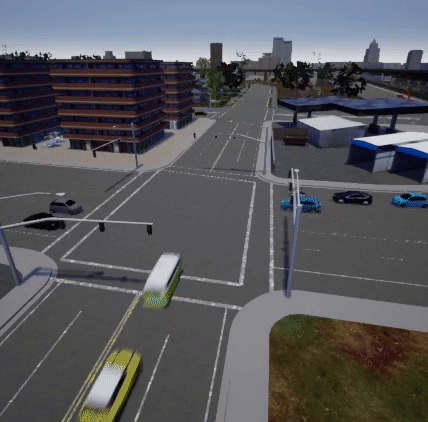
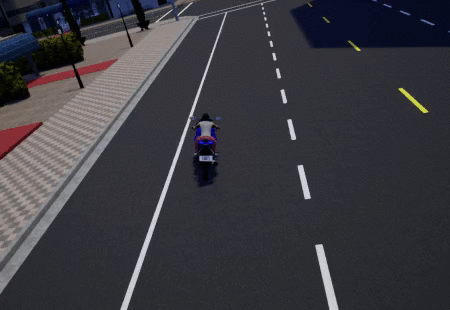
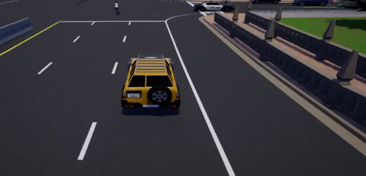

Recorder
This feature allows to record and reenact a previous simulation. All the events happened are registered in the recorder file. There are some high-level queries to trace and study those events.
Recording
All the data is written in a binary file on the server side only. However, the recorder is managed using the carla.Client.
Actors are updated on every frame according to the data contained in the recorded file. Actors in the current simulation that appear in the recording will be either moved or re-spawned to emulate it. Those that do not appear in the recording will continue their way as if nothing happened.
Important
By the end of the playback, vehicles will be set to autopilot, but pedestrians will stop.
The recorder file includes information regarding many different elements.
- Actors — creation and destruction, bounding and trigger boxes.
- Traffic lights — state changes and time settings.
- Vehicles — position and orientation, linear and angular velocity, light state, and physics control.
- Pedestrians — position and orientation, and linear and angular velocity.
- Lights — Light states from buildings, streets, and vehicles.
To start recording there is only need for a file name. Using \, / or : characters in the file name will define it as an absolute path. If no path is detailed, the file will be saved in CarlaUE4/Saved.
client.start_recorder("/home/carla/recording01.log")
By default, the recorder is set to store only the necessary information to play the simulation back. In order to save all the information previously mentioned, the argument additional_data has to be configured when starting the recording.
client.start_recorder("/home/carla/recording01.log", True)
Note
Additional data includes: linear and angular velocity of vehicles and pedestrians, traffic light time settings, execution time, actors' trigger and bounding boxes, and physics controls for vehicles.
To stop the recording, the call is also straightforward.
client.stop_recorder()
Note
As an estimate, 1h recording with 50 traffic lights and 100 vehicles takes around 200MB in size.
Simulation playback
A playback can be started at any point during a simulation. Besides the path to the log file, this method needs some parameters.
client.replay_file("recording01.log", start, duration, camera)
| Parameter | Description | Notes |
|---|---|---|
start |
Recording time in seconds to start the simulation at. | If positive, time will be considered from the beginning of the recording. If negative, it will be considered from the end. |
duration |
Seconds to playback. 0 is all the recording. | By the end of the playback, vehicles will be set to autopilot and pedestrians will stop. |
camera |
ID of the actor that the camera will focus on. | Set it to 0 to let the spectator move freely. |
Setting a time factor
The time factor will determine the playback speed. It can be changed any moment without stopping the playback.
client.set_replayer_time_factor(2.0)
| Parameter | Default | Fast motion | Slow motion |
|---|---|---|---|
time_factor |
1.0 | >1.0 | ** <1.0 ** |
Important
If time_factor>2.0, the actors' position interpolation is disabled and just updated. Pedestrians' animations are not affected by the time factor.
When the time factor is around 20x traffic flow is easily appreciated.

Recorded file
The details of a recording can be retrieved using a simple API call. By default, it only retrieves those frames where an event was registered. Setting the parameter show_all would return all the information for every frame. The specifics on how the data is stored are detailed in the recorder's reference.
# Show info for relevant frames
print(client.show_recorder_file_info("recording01.log"))
-
Opening information. Map, date and time when the simulation was recorded.
-
Frame information. Any event that could happen such as actors spawning or collisions. It contains the actors' ID and some additional information.
-
Closing information. Number of frames and total time recorded.
Version: 1
Map: Town05
Date: 02/21/19 10:46:20
Frame 1 at 0 seconds
Create 2190: spectator (0) at (-260, -200, 382.001)
Create 2191: traffic.traffic_light (3) at (4255, 10020, 0)
Create 2192: traffic.traffic_light (3) at (4025, 7860, 0)
...
Create 2258: traffic.speed_limit.90 (0) at (21651.7, -1347.59, 15)
Create 2259: traffic.speed_limit.90 (0) at (5357, 21457.1, 15)
Frame 2 at 0.0254253 seconds
Create 2276: vehicle.mini.cooperst (1) at (4347.63, -8409.51, 120)
number_of_wheels = 4
object_type =
color = 255,241,0
role_name = autopilot
...
Frame 2350 at 60.2805 seconds
Destroy 2276
Frame 2351 at 60.3057 seconds
Destroy 2277
...
Frames: 2354
Duration: 60.3753 seconds
Queries
Collisions
Vehicles must have a collision detector attached to record collisions. These can be queried, using arguments to filter the type of the actors involved in the collisions. For example, h identifies actors whose role_name = hero, usually assigned to vehicles managed by the user. There is a specific set of actor types available for the query.
- h = Hero
- v = Vehicle
- w = Walker
- t = Traffic light
- o = Other
- a = Any
Note
The manual_control.py script assigns role_name = hero for the ego vehicle.
The collision query requires two flags to filter the collisions. The following example would show collisions between vehicles, and any other object.
print(client.show_recorder_collisions("recording01.log", "v", "a"))
The output summarizes time of the collision, and type, ID and description of the actors involved.
Version: 1
Map: Town05
Date: 02/19/19 15:36:08
Time Types Id Actor 1 Id Actor 2
16 v v 122 vehicle.yamaha.yzf 118 vehicle.dodge_charger.police
27 v o 122 vehicle.yamaha.yzf 0
Frames: 790
Duration: 46 seconds
Important
As it is the hero or ego vehicle who registers the collision, this will always be Actor 1.
The collision can be reenacted by using the recorder and setting it seconds before the event.
client.replay_file("col2.log", 13, 0, 122)
In this case, the playback showed this.

Blocked actors
Detects vehicles that where stucked during the recording. An actor is considered blocked if it does not move a minimum distance in a certain time. This definition is made by the user during the query.
print(client.show_recorder_actors_blocked("recording01.log", min_time, min_distance))
| Parameter | Description | Default |
|---|---|---|
min_time |
Minimum seconds to move `min_distance`. | 30secs. |
min_distance |
Minimum centimeters to move to not be considered blocked. | 10cm. |
Note
Sometimes vehicles are stopped at traffic lights for longer than expected.
The following example considers that vehicles are blocked when moving less than 1 meter during 60 seconds.
client.show_recorder_actors_blocked("col3.log", 60, 100)
The output is sorted by duration, which states how long it took to stop being "blocked" and move the min_distance.
Version: 1
Map: Town05
Date: 02/19/19 15:45:01
Time Id Actor Duration
36 173 vehicle.nissan.patrol 336
75 214 vehicle.chevrolet.impala 295
302 143 vehicle.bmw.grandtourer 67
Frames: 6985
Duration: 374 seconds
The vehicle 173 was stopped for 336 seconds at time 36 seconds. Reenact the simulation a few seconds before the second 36 to check it out.
client.replay_file("col3.log", 34, 0, 173)

Sample python scripts
Some of the provided scripts in PythonAPI/examples facilitate the use of the recorder.
- start_recording.py starts the recording. The duration of the recording can be set, and actors can be spawned at the beginning of it.
| Parameter | Description |
|---|---|
-f |
Filename. |
-n (optional) |
Vehicles to spawn. Default is 10. |
-t (optional) |
Duration of the recording. |
- start_replaying.py starts the playback of a recording. Starting time, duration, and actor to follow can be set.
| Parameter | Description |
|---|---|
-f |
Filename. |
-s (optional) |
Starting time. Default is 10. |
-d (optional) |
Duration. Default is all. |
-c (optional) |
IDof the actor to follow. |
- show_recorder_file_info.py shows all the information in the recording file. By default, it only shows frames where an event is recorded. However, all of them can be shown.
| Parameter | Description |
|---|---|
-f |
Filename. |
-s (optional) |
Flag to show all details. |
- show_recorder_collisions.py shows recorded collisions between two flags of actors of types A and B.
-t = vvwould show all collisions between vehicles.
| Parameter | Description |
|---|---|
-f |
Filename. |
-t |
Flags of the actors involved. h = hero v = vehicle w = walker t = traffic light o = other a = any |
- show_recorder_actors_blocked.py lists vehicles considered blocked. Actors are considered blocked when not moving a minimum distance in a certain time.
| Parameter | Description |
|---|---|
-f |
Filename. |
-t (optional) |
Time to move -d before being considered blocked. |
-d (optional) |
Distance to move to not be considered blocked. |
Now it is time to experiment for a while. Use the recorder to playback a simulation, trace back events, make changes to see new outcomes. Feel free to say your word in the CARLA forum about this matter.